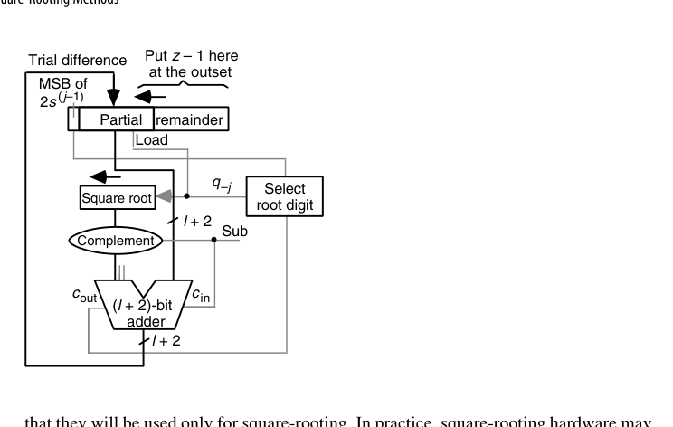
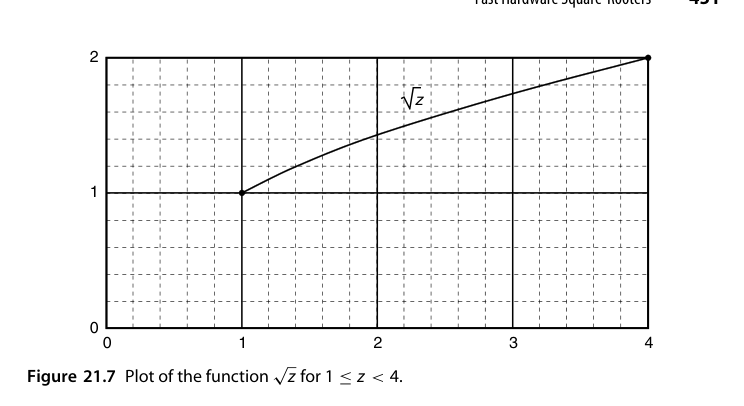
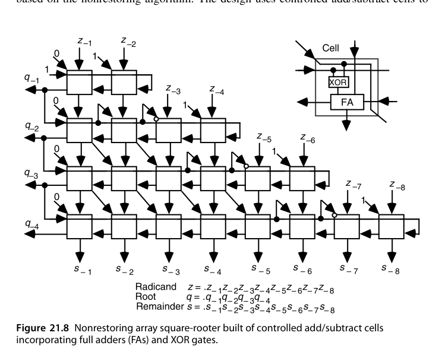
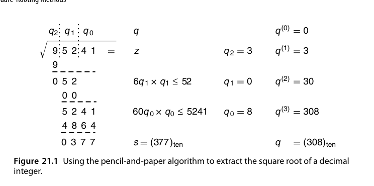
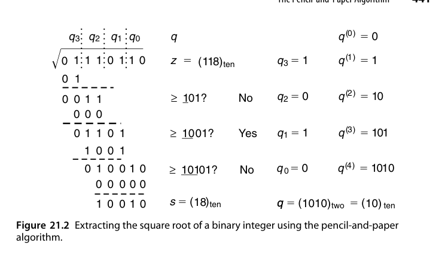

第21章 开平方方法（Square-Rooting Methods）
本章导读
开平方（square root）是除法的”近亲”：同样有数字递归（逐位试根）与收敛迭代（Newton）两大家族，且都能复用除法器的数据通路。本章从纸笔算法讲起，走完恢复/不恢复、高基数、收敛法全程，最后看快速硬件开方器——图形学（归一化）、DSP（均方根）、科学计算的日常需求。
21.1 纸笔算法（The Pencil-and-Paper Algorithm)
手工开平方的口诀：两位一组分段，逐位试根 \(q\)，每步计算”当前根×20 + 新位”乘以新位并从余数中减去。本质：利用 \((10a + b)^2 = 100a^2 + (20a + b)b\) 的展开，每步确定一位新根。
二进制版本大幅简化：试根位只需试 1（0 自动成立），每步比较”部分余数 vs. \((4q + 1) \ll 2j\)“——一次减法定一位。
先补上记号与一条关键不等式：设 \(2k\) 位的被开方数 \(z\)（radicand）、\(k\) 位的根 \(q\)，则余数 \(s = z - q^2\) 必满足 \(s \le 2q\)——若 \(s \ge 2q+1\)，就有 \(z = q^2 + s \ge (q+1)^2\)，与 \(q = \lfloor\sqrt{z}\rfloor\) 矛盾。这解释了为什么 \(2k\) 位的 \(z\) 需要 \(k+1\) 位的余数：余数寄存器必须容得下”根再长一位”所需的全部信息。
“乘 20 添位”的来历一步可推。设部分根为 \(q^{(i)}\)，添上新数字 \(b\) 后新根为 \(10q^{(i)} + b\)，其平方为
\[ (10q^{(i)} + b)^2 = 100\,(q^{(i)})^2 + (20q^{(i)} + b)\,b \]
第一项 \(100(q^{(i)})^2\) 已在早前各步从部分余数中扣净，故本步只需再减 \((20q^{(i)} + b) \times b\)——把部分根翻倍、右端拼上新位、再乘新位，口诀的全部内容都在这个展开式里。
十进制：两位分组 \(09\,52\,41\)，故根有 3 位。首位 \(q_2 = 3\)：\(3^2 = 9\) 恰好扣净首组 09，部分余数剩 52。次位：部分根 3 翻倍得 6，找 \(q_1\) 使 \((60 + q_1) \cdot q_1 \le 52\)——\(61 \times 1\) 都放不下，故 \(q_1 = 0\)。末位：部分根 30 翻倍得 60，找 \(q_0\) 使 \((600 + q_0) \cdot q_0 \le 5241\)，取 \(q_0 = 8\)（\(608 \times 8 = 4864\)）。最终 \(q = 308\)，\(s = 95241 - 308^2 = 377\)。
二进制：\(z = (1110110)_2 = 118\)，分组 \(1\,11\,01\,10\)。根数字只取 0/1，试根退化为一次试探减法：把部分根 \(q^{(i)}\) 右端拼上 \(01\)（即 \(4q^{(i)} + 1\)）与部分余数比较，够减则该位为 1。各步比较依次为 \(\ge 1\)?（是）、\(\ge 101\)?（否）、\(\ge 1001\)?（是）、\(\ge 10101\)?（否），得 \(q = (1010)_2 = 10\)、余数 \(s = 18\)——与 \(10^2 + 18 = 118\) 相符。
从二进制算例还能抽象出点记法（dot notation）视图：被开方数与根写在顶部，其下每行点阵对应一个”部分根拼 \(0q_{k-i-1}\) 后乘新根位”的被减数。由于根数字只有 0/1 两种取值，二进制开平方就退化为”从 \(z\) 中减去一串 0 或 \((q^{(i)}01)_2\) 的移位版本”。这张点阵图与乘法点阵一样，是后文推导恢复/不恢复阵列开方器的蓝图。
21.2 恢复式移位/减算法（Restoring Shift/Subtract Algorithm)
硬件版恢复式开方，与恢复除法同构：
- 部分余数左移 2 位（每拍出 1 位根，因为开方每次消耗被开方数 2 位）；
- 试减 \((4q + 1) \ll 2j\)；
- 够减：根位置 1，保留差；不够减：根位置 0，恢复原值。
数据通路可直接改造自除法器：除数寄存器换成”动态生成的试减项”（\((4q+1)\) 由当前根左移 2 位 + 1 构成，一个拼接电路即可）。
把算法写成对小数（fractional）被开方数的递推更贴近硬件实现。IEEE 754 浮点开方对应 \(1 \le z < 4\)、\(1 \le q < 2\)（奇指数先减 1 变偶、尾数左移一位即落入此区间）。维持不变式 \(s^{(j)} = z - [q^{(j)}]^2\)，由 \(q^{(j)} = q^{(j-1)} + 2^{-j}q_{-j}\) 展开平方差可解出每拍递推
\[ s^{(j)} = 2s^{(j-1)} - q_{-j}\left(2q^{(j-1)} + 2^{-j}q_{-j}\right), \qquad s^{(0)} = z - 1,\ q^{(0)} = 1 \]
即部分余数每拍左移 2 位（开方每拍消耗 \(z\) 的 2 位），再减去试减项 \(2q^{(j-1)} + 2^{-j}\) 或 0。试减项的构造极其便宜：\(2q^{(j-1)} + 2^{-j}\) 就是”部分根左移一位后右端拼 \(01\)“——纯拼接、无加法器。
\(z = (01.110110)_2\)，\(s^{(0)} = z - 1 = 0.110110\)。逐拍：\(2s^{(0)} = 001.101100\)，试减 \(10.1_2\)（即 \(2 \times 1 + 0.5\)）得负 → \(q_{-1} = 0\)，恢复原余数；\(2s^{(1)} = 011.011000\)，试减 \(10.01_2\) 成功 → \(q_{-2} = 1\)；如此继续六拍得 \(q = 1.010110_2 = 86/64\)，\(s^{(6)} = 156/64\)。
舍入环节有个漂亮的免费午餐。要得到 \(l\) 位的舍入结果，只需多迭代一位 \(q_{-l-1}\)：为 0 则截断、为 1 则末位进 1。除法里最麻烦的”恰在中间”（需要 sticky bit 的场景）在开方中不可能出现：中点情形要求 \(z = (q + 2^{-(l+1)})^2\)，展开后其小数部分在第 \(2l+2\) 位上有一个无法对消的 1，而 \(z\) 本身只有 \(l\) 个小数位——矛盾。于是既不用 sticky 逻辑，也不用检查余数是否为零。
21.3 二进制不恢复算法（Binary Nonrestoring Algorithm)
与不恢复除法平行：试减失败不回退，下一拍改做加法补偿。根数字集合 \(\{-1, +1\}\)（或 \(\{0, 1\}\) 编码），每拍固定一次加减：
- 部分余数 \(\ge 0\)：根位 1，下拍减；
- 部分余数 \(< 0\)：根位 0（即 \(-1\)），下拍加。
收尾时若余数为负做一次最终修正。根以冗余形式产出，即时转换（on-the-fly conversion）为普通二进制——与 SRT 除法完全同款技巧。

工程实现上唯一的新麻烦是 \(q_{-j} = -1\) 时的加数 \(2q^{(j-1)} - 2^{-j}\)：它不再是对部分根的简单拼接（\(+2^{-j}\) 变成了 \(-2^{-j}\)）。经典解法是维护一对寄存器——\(Q\) 存部分根 \(q^{(j-1)}\)，\(Q^*\) 存缩减小根（diminished partial root） \(q^{(j-1)} - 2^{-j+1}\)。于是两种情形都能拼出来：
- \(q_{-j} = 1\)：减 \(2q^{(j-1)} + 2^{-j}\)，由 \(Q\) 右端拼 \(01\) 移位形成；
- \(q_{-j} = -1\)：加 \(2q^{(j-1)} - 2^{-j}\)，由 \(Q^*\) 右端拼 \(11\) 移位形成。
\(Q/Q^*\) 的更新规则同样只是拼接：\(q_{-j}=1 \Rightarrow Q := Q\,1,\ Q^* := Q\,0\)；\(q_{-j}=-1 \Rightarrow Q := Q^*\,1,\ Q^* := Q^*\,0\)。再补一条 \(q_{-j}=0 \Rightarrow Q := Q\,0,\ Q^* := Q^*\,1\)，就得到与 SRT 除法（13.6 节）同款的”跳 0/跳 1”变体：检测部分余数的前导 0/1 并连移，一次产出多位根数字。若进一步把部分余数保持为保留进位形式（stored-carry form），用和/进位两分量高几位查表选根位，便得到与 14.2 节 carry-save SRT 完全平行的开方器——除法器的每一级进化都能在开方器上重演一遍。
21.4 高基数开方（High-Radix Square-Rooting)
radix-4 开方每拍出 2 位根，试减项集合变大，同样需要”根数字选择表”——与 radix-4 SRT 除法的问题结构几乎一致（部分余数截断估计 + 冗余根数字）。差别：除法的”除数”固定，开方的”试减项”随根的增长逐拍变化——选择表的输入因此多一维，设计更微妙。实用系统中 radix-4 开方多由 SRT 除法器共享实现。
基数 \(r\) 的开方递推是二进制版本的直接推广：
\[ s^{(j)} = r\,s^{(j-1)} - q_{-j}\left(2q^{(j-1)} + r^{-j}q_{-j}\right) \]
以 radix-4、根数字集 \([-2, 2]\) 为例：\(Q^*\) 存 \(q^{(j-1)} - 4^{-j+1}\)，四种非零数字对应的加/减项都可由 \(Q\) 或 \(Q^*\) 拼接常数后移位形成——\(q_{-j} = 2\) 减 \(4q^{(j-1)} + 2^{-2j+2}\)（\(Q\) 拼 \(010\) 双移）、\(q_{-j} = 1\) 减 \(2q^{(j-1)} + 2^{-2j}\)（\(Q\) 拼 \(001\)）、\(q_{-j} = -1\) 加 \(2q^{(j-1)} - 2^{-2j}\)（\(Q^*\) 拼 \(111\)）、\(q_{-j} = -2\) 加 \(4q^{(j-1)} - 2^{-2j+2}\)（\(Q^*\) 拼 \(110\)）。\(Q/Q^*\) 的五条更新规则仍是纯拼接，根在即时转换（on-the-fly conversion）中直接落成普通二进制，无需收尾转换步骤。
与除法相比有两处结构性差异，设计者必须警惕：
- 选择表无法全程统一。除法的除数从头就是已知的，选择表只需观察部分余数；开方的”试减项”依赖部分根本身，而最初几拍根几乎未知。补救：开机时用一个小 PLA/查表先”冒出”根的前几位，或前几拍改用略有不同的选择规则。
- 与除法共享选择表需要改数字集。对比 radix-4 两种递推——除法减 \(q_{-j} d\)，开方减 \(q_{-j}(2q^{(j-1)} + 4^{-j}q_{-j})\)——若把开方数字集改用 \(\{-1, -\tfrac12, 0, \tfrac12, 1\}\)，两者部分余数的幅值范围就一致了，可复用同一张商/根数字选择表；该数字集转回 \([-2,2]\) 或普通二进制无需额外计算。
另外，IEEE 754 下 \(z \in [1,4)\) 的根在 \([1,2)\)，radix-4 数字集 \([-2,2]\) 表示绰绰有余；首位数字实际可限制在 \([0,2]\)，但不能想当然压到 \([0,1]\)——冗余表示下首位仍可能需要取 2、由后续位借位补偿（原书留作思考题）。
21.5 收敛法开方（Square-Rooting by Convergence)
与收敛除法（16 章）完全平行：
- 直接 Newton：\(r_{i+1} = \frac{1}{2}(r_i + x / r_i)\)——每轮含一次除法，不理想；
- 倒根 Newton：先求 \(1/\sqrt{x}\)：\(r_{i+1} = \frac{r_i}{2}(3 - x r_i^2)\)——只用乘法（每轮 2-3 次乘法，FMA 友好），最后乘 \(x\) 得 \(\sqrt{x}\)。二次收敛：8 位查表初值 → 16 → 32 → 64 位，3 轮。
补全推导与收敛分析。对 \(f(x) = x^2 - z\) 套 Newton–Raphson 迭代 \(x^{(i+1)} = x^{(i)} - f(x^{(i)})/f'(x^{(i)})\) 即得上式。令 \(\delta_i = \sqrt{z} - x^{(i)}\)，代入可证
\[ \delta_{i+1} = -\frac{\delta_i^2}{2x^{(i)}} \]
误差恒为负（从上方单调收敛）且按平方消失；\(z \in [1,4)\) 时从 \(x^{(0)} = 2\) 出发可保持 \(|\delta_{i+1}| \le \delta_i^2/2\)。若查表把初值精度提到 \(2^{-8}\)，三轮迭代即达 64 位。
查表得初值 \(x^{(0)} = 1.5\)（精度 \(10^{-1}\)）：
| \(i\) | \(x^{(i)}\) | 精度 |
|---|---|---|
| 0 | 1.5 | \(10^{-1}\) |
| 1 | \(0.5\,(1.5 + 2.4/1.5) = 1.550\,000\) | \(10^{-2}\) |
| 2 | \(1.549\,193\,548\) | \(10^{-4}\) |
| 3 | \(1.549\,193\,338\) | \(10^{-8}\) |
三轮、每轮一次除法——这正是”直接 Newton 含除法”的代价，也是各种免除非法（division-free）变体的动机。
去除法的三条路线，按工程出现频率排序：
- 倒根 Newton：对 \(f(x) = 1/x^2 - z\)（根在 \(x = 1/\sqrt{z}\)）迭代，得 \(x^{(i+1)} = \frac{x^{(i)}}{2}\left(3 - z(x^{(i)})^2\right)\)，每轮 3 乘 1 加，最后乘 \(z\) 还原。Cray-2 即用此法，且把 \(1.5x^{(0)}\) 与 \(0.5(x^{(0)})^3\) 预存成表，首轮只剩 1 乘 1 加；\(x^{(1)}\) 已达半个机器精度，第二轮后乘 \(z\) 收工。算例：\(z = 0.5678\)，\(x^{(0)} = 1.3\) → \(x^{(1)} = 1.326\,271\,700\) → \(x^{(2)} = 1.327\,095\,128\)，乘 \(z\) 得 \(\sqrt{z} \approx 0.753\,524\,613\)。
- 倒数表辅助：把迭代改写为 \(x^{(i+1)} = x^{(i)} + \frac{1}{2x^{(i)}}\left(z - (x^{(i)})^2\right)\)，用近似倒数 \(\gamma(x^{(i)})\) 代替精确的 \(1/x^{(i)}\)——每轮表查 + 2 乘 2 加，但收敛降到低于二次，轮数要放宽。
- 双迭代交织：\(x^{(i+1)} = \frac{1}{2}(x^{(i)} + z\,y^{(i)})\)、\(y^{(i+1)} = y^{(i)}(2 - x^{(i)}y^{(i)})\)，\(x\) 逼近 \(\sqrt{z}\)、\(y\) 逼近 \(1/\sqrt{z}\)（后者即 16 章的倒数 Newton）；两路乘法可流水，收敛介于线性与二次之间。
GPU 的 rsqrt（快速逆平方根）指令 = 查表 + 1 轮倒根 Newton，精度约 23 位——图形学向量归一化的标配。它与 15.5 节的倒数 Newton 共享同一套”初始粗值 + 平方收敛 + FMA 实现”方法论。
21.6 快速硬件开方器（Fast Hardware Square-Rooters)
工程选型指南：
| 方案 | 延迟 | 面积 | 适用 |
|---|---|---|---|
| 数字递归（radix-2/4） | \(k\) 或 \(k/2\) 拍 | 小（可复用除法器） | 通用 FPU、嵌入式 |
| 收敛法 | ~3 轮乘法 | 复用乘法器 + 表 | 已有快速乘法器的 FPU/GPU |
| 组合阵列 | 1 拍 | 大 | 小位宽、极致延迟 |
现代 FPU 通常让开方与除法共享同一个 SRT 单元（控制微码不同），因为两者数据通路同构——面积几乎零增加。
组合式开方器有两大用途：给收敛法提供初值，或干脆整体替代递归式方案。初值近似的”阶梯”很能说明设计取舍——对 \(z \in [1,4)\) 上的 \(\sqrt{z}\)：
- 最佳常数近似 \(x^{(0)} = 1.5\)：最大绝对误差 0.5，\(z=1\) 处相对误差 50%；
- 免运算线性近似 \(x^{(0)} = 1 + z/4\)（移位拼位即得）：绝对误差 0.25，相对误差 25%；
- 只加一次法的线性近似 \(x^{(0)} = 7/8 + z/4\)：误差减半至 0.125；
- 最佳线性近似 \(x^{(0)} = 17/24 + z/3\)（需一次常数乘法）：误差 \(1/24 \approx 4.2\%\)，在 \(z = 1, 2.25, 4\) 三处达到。
把 \([1,4)\) 按 \(z_1\) 位切成 \([1,2)\) 与 \([2,4)\) 两个子区间、各用免运算线性近似（低位子区间用 \(1 + (z-1)/2\)，高位用 \(1 + z/4\)），最大误差进一步降到约 0.086。整条阶梯与 24 章的插值/分段表一脉相承——用一点点逻辑换大幅存储或迭代轮数。

整数情形还有一个只靠”计前导零 + 移位”的初值：设 \(z\) 的最高位 1 在奇位置 \(2^{2m-1}\)（否则把 \(z\) 翻倍、结果乘 \(1/\sqrt{2} \approx 0.707\,107\)），取 \(x^{(0)} = 2^{m-1} + 2^{-(m+1)}z\)，可证最大相对误差 6.07%（最坏在 \(z_{rest} = 0\) 处，\(x^{(0)}/\sqrt{z} = 3/\sqrt{8}\)）。Schwarz 与 Flynn 给出更工程化的方案：在 53 位乘法器上加约 1000 个门，让它顺带”算出”16 位的 \(\sqrt{z}\) 初值，之后仅两轮 Newton 即达双精度——初值生成几乎白拿。
另一极端是完全不迭代的阵列开方器（array square-rooter）：从点记法图出发，像 15.5 节由除法点阵导出阵列除法器那样，直接铺出受控加/减细胞阵列。下图为非恢复式 8 位小数开方器：每个细胞含一个全加器（FA）与一个异或门，按上一行部分余数的符号决定本行做加还是做减——非恢复算法的”欠账/还账”被摊平成二维电路。与阵列除法器一样，它用面积换延迟，适合位宽小、延迟极敏感的场合。

RTL 实践：rtl/ch21_2_restoring_sqrt
16 位无符号恢复式开方器：每拍部分余数左移 2 位、试减 \(4q+1\)，8 拍出 8 位根与余数：
wire [15:0] rem_sh = {rem[13:0], din[15:14]}; // 左移 2 位 + 被开方数新 2 位
wire [15:0] trial = {6'b0, root, 2'b01}; // 4q + 1：当前根左移 2 位置 1
// 够减：rem <= rem_sh - trial，根位置 1；否则 rem <= rem_sh，根位置 0设计要点：
- 试减项的拼接触：（\(4q+1\)）无需乘法器——把当前根左移 2 位、末位置 01 即可，这正是二进制开方比十进制优雅的原因；
- 每拍消耗 2 位输入：开方每拍出 1 位根，对应被开方数 2 位——与除法（每拍 1 位）的节奏差异来自平方的幂次；
- 不变式：迭代全程保持 \(d = q^2 + r\) 且 \(0 \le r \le 2q\)，testbench 的黄金模型直接按定义枚举验证，覆盖 \(0\)、\(255^2\)、\(2^{16}-1\) 边界与 1000 组随机。
cd rtl/ch21_2_restoring_sqrt
bash run_iverilog.sh # 或 bash run_verilator.sh本章小结
- 开方与除法同构：数字递归（恢复/不恢复/SRT）与收敛（Newton）两族。
- 不恢复 + 即时转换 = SRT 开方，与除法器共享数据通路。
- 倒根 Newton 只用乘法，GPU rsqrt 的内部实现。
- 工程上开方器很少独立存在——它是除法器的一种工作模式。
原书插图

